Lageplan · Gruppen · Kameras

K1 Übersicht SO · K2 Augenhöhe Karawanenweg → Pyramide · K3 Seite West, Silhouette. K4 = Nahaufnahme Fuß an G1.
Frei bleiben: Karawanenweg und Platz vor der Pyramide (Freifläche); kein Baum vor der Pyramide über 13 (60 % von 21,8).
Frei bleiben: Karawanenweg und Platz vor der Pyramide (Freifläche); kein Baum vor der Pyramide über 13 (60 % von 21,8).
Geschichte
Die Mumien halten Hof vor ihrer Pyramide: Mumie A thront auf dem Sarkophag, Mumie B trägt das Ankh. Alles Leben drängt sich an die Oase, dort stehen die Palmen dicht und neigen sich übers Wasser. Je weiter weg vom Wasser, desto karger: Agaven, ein Saguaro, am Westrand nur noch totes Holz. Gefühl: Hitze, Weite, ein grüner Fleck.
Farbkonzept 60 / 30 / 10
60 % Sand · Boden, Dünen, Sandstein (Pyramide, Steine Ton in Ton)
30 % Palmengrün · Laub hell #5fb04a / dunkel #3f9142
10 % Oasentürkis · Wasser; hellster Punkt = Pyramidenspitze #f8dc98
Hell-Dunkel: Hellste Fläche ist die Pyramidenspitze. Das dunkle Palmengrün sitzt links an der Oase als Gegengewicht, der Rest bleibt hell.
Gruppen-Rezepte (Rule of Three, Ort-Begründung)
| G1 | Oasen-Hain Wasser Anker: Palme gebogen ×1,3 übers Wasser Stützen: Palme gerade ×2 (0,8) · Schilf ×3 am Ufer Akzent: Kiesel |
| G2 | Mumien-Garten Bewohner Anker: Saguaro ×1,3 Stützen: Agave ×2 · Saguaro 0,8 Akzent: Kiesel |
| G3 | Palmen an der Ostflanke Landmarke Anker: Palme gerade ×1,3 Stützen: Palme 0,8 · Agave Akzent: Kiesel |
| G4 | Verdorrt am Westrand Rand Anker: Totes Holz ×1,2 Stützen: Sandstein ×2 · Gras Akzent: – |
Arten · Bild aus lineup.html · Zielhöhe in H
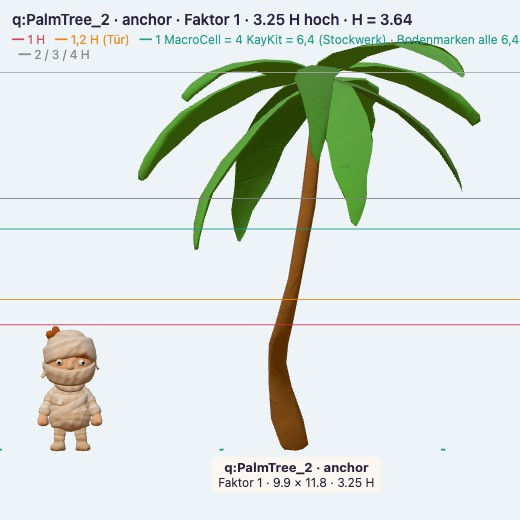
Palme gebogen3,25 H · Anker Oase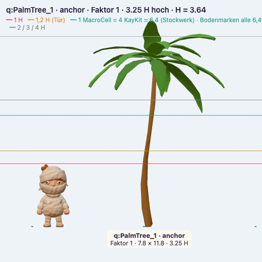
Palme gerade3,25 H · Anker Flanke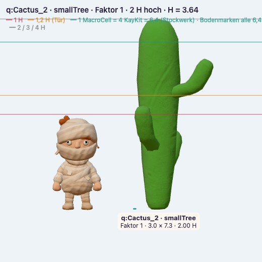
Saguaro2 H · Anker trocken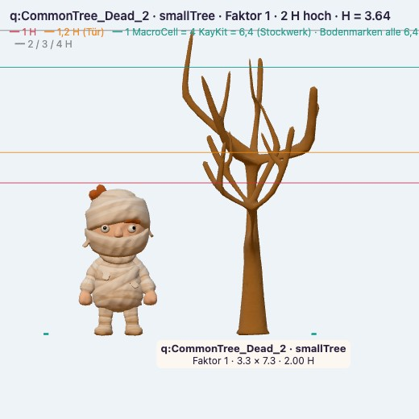
Totes Holz2 H · Akzent Westrand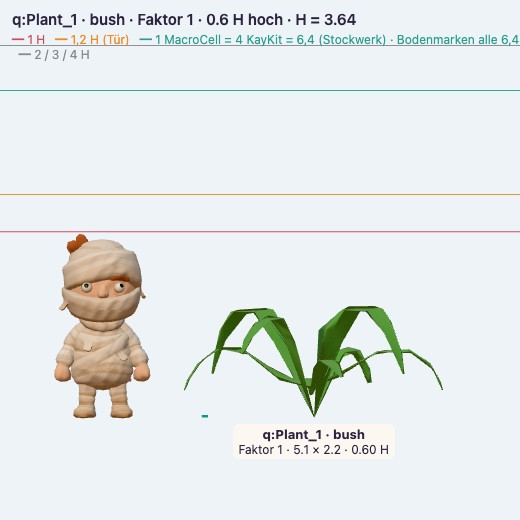
Agave0,6 H · Busch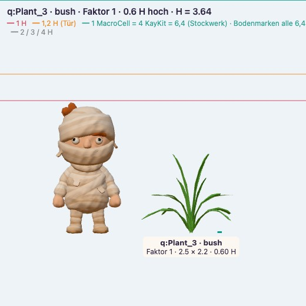
Schilf0,6 H · nur am Ufer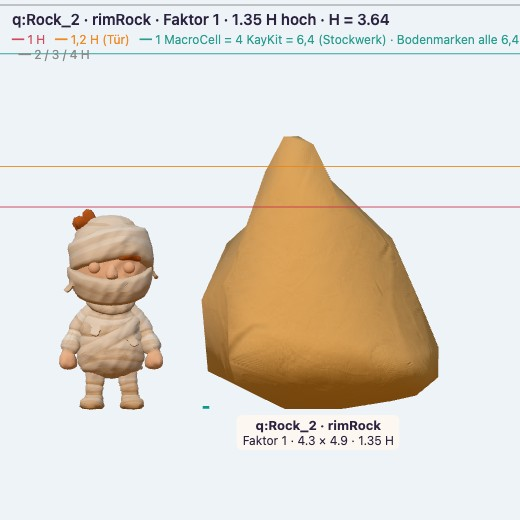
Sandstein1,35 H · Rand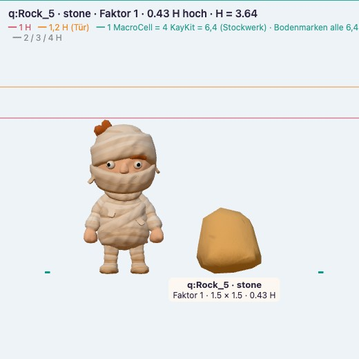
Kiesel0,43 H · Akzent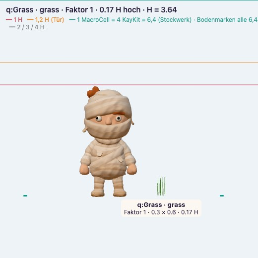
Gras0,18 H · Fuß-ÜberlappungReferenz
 Claybound: Knetform, Kaktus
Claybound: Knetform, Kaktus Palmen dicht am Wasser
Palmen dicht am Wasser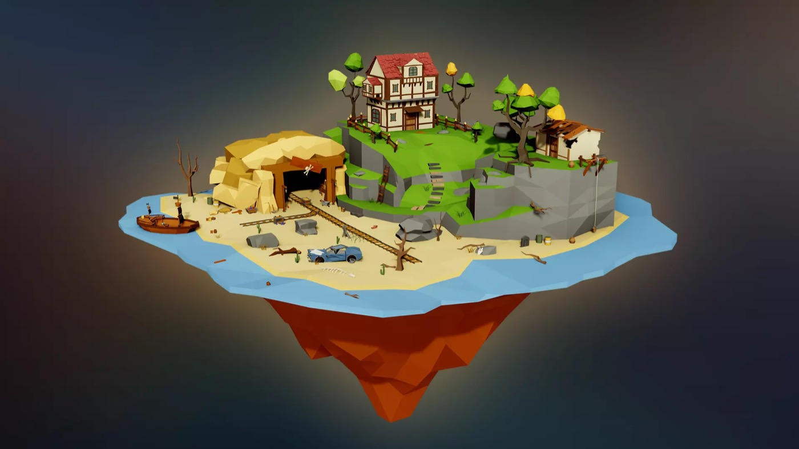
Sand, Fels, totes HolzKit-Look: facettiert → rund geknetet (gleiche Dreiecke)
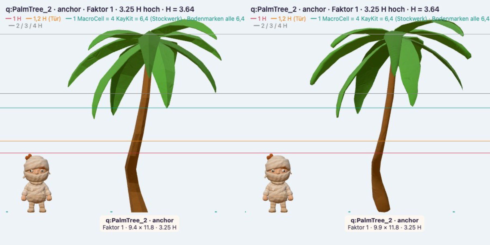